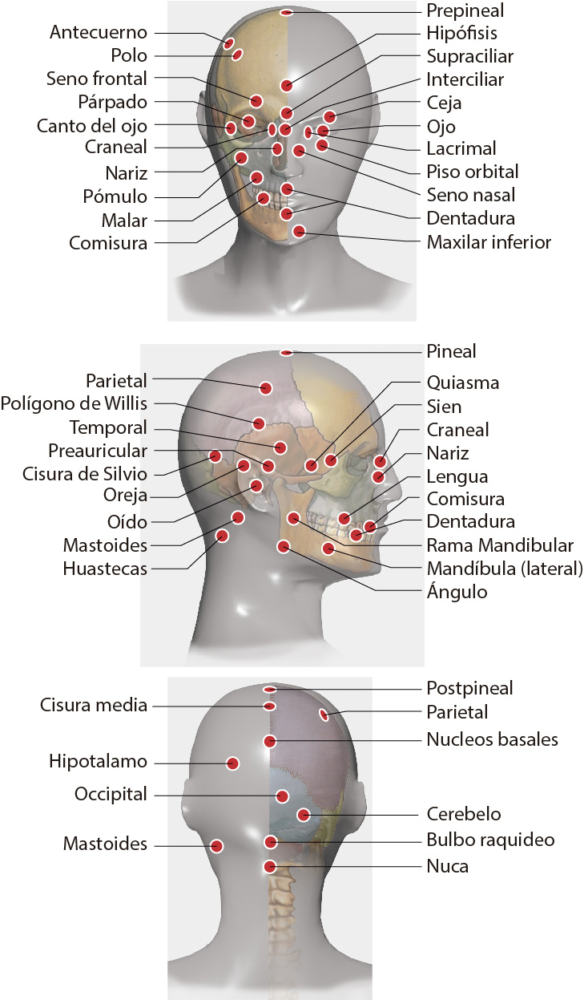

1. Pineal, coronilla
1. Pineal, coronilla
Pineal:
Disfunción
Hipófisis:
Depresión
Hipófisis:
Herpes (cualquier tipo)
Hipotálamo:
Depresión
Bulbo raquídeo:
Guillén Barré
Duodeno
Disfunción:
Vejiga:
Cyptococo
Cerebelo:
Alopecia
Utero o próstata:
Lujuria "Sade"
Páncreas:
Lujuria "Sade"
Páncreas
Abandono:
Tiroides
Disfunción
Corazón:
Disfunción
Higado:
Disfunción
Suprarrenal:
Disfunción
2. Hipófisis
2. Hipófisis
Hipófisis:
Disfunción
Ovario:
Disfunción
Vejiga:
Dengue Hemorrágico
Bulbo raquídeo:
Diabetes insípida
Utero:
Menopausia
Mastoides (I):Telepatía
Mastoides (I):
Mareos
Tálamo:
Trastonos de aprendizaje o carácter
Supraciliar:
Ansiedad
Tiroides:
Venganza
Vesícula:
Ansiedad
Suprarrenales:
Amnesia
Ovario, testículo:
Memoria
Corazón:
Odio
Cerebelo
Memoria
3. Supraciliar
3. Supraciliar
Bulbo raquídeo:
Aceptación del yo (corporal)
Interciliar:
Equilibrio energía emocional
4. Interciliar
4. Interciliar
Bulbo:
Crecimiento, caracter
Bulbo:
Disfunción del lenguaje
Bulbo:
Apego, anclaje
5. Seno frontal
5. Seno frontal
Seno frontal:
Sinusitis frontal
6. Ceja
6. Ceja
Ceja:
Neurosis crítica
Ceja:
Virus Sincicial
Ceja:
Moxarella Catarrhalis
7. Ojo
7. Ojo
Ojo:
Citomegalovirus, Esclerosis M.
Cerebelo:
Desinflama nervio óptico
Rabo del ojo:
Trastornos psíquicos
Escápula
Cataratas
8. Párpado
8. Párpado
Párpado:
Neisseria Catarrhalis
9. Lacrimal
9. Lacrimal
Lacrimal:
Haemmophylus Influenzae
Lacrimal:
Klebsiella Pneumoniae
Craneal:
Trastorno de la psique
10. Canto del ojo
10. Canto del ojo
Canto del Ojo:
Aspergillus Nigel
11. Piso orbital
11. Piso orbital
Piso orbital:
Orf virus
Cerebelo:
Depresión
12. Craneal
12. Craneal
Craneal:
Bacilo del Antrax
13. Nariz
13. Nariz
Nariz:
Toxoides, rinitis
14. Seno paranasal
14. Seno paranasal
Seno paranasal:
Sinusitis nasal
15. Pómulo
15. Pómulo
Riñón (cl):
Plasmodium vivax
Riñón (cl):
Trastorno mental
Pómulo:
Trastorno mental
Pómulo:
Plasmodium vivax
Pómulo:
Fibromialgia
Tiroides:
Alcoholismo, adicciones
16. Malar
16. Malar
Malar:
Enterovirus
Riñón (cl):
Plasmodium vivax
17. Arco Cigomático
17. Arco Cigomático
Arco cigomático:
Moxarella catarrhalis
Parietal:
Listeria monocytógenes
18. Maxilar superior
18. Maxilar superior
Maxilar superior:
Kebsiella Pnumoniae
Maxilar superior:
Leptorichia Bucalis
Cola de páncreas:
Diplococo
Cola de páncreas;
Depresión
19. Maxilar inferior
19. Maxilar inferior
Maxilar inferior:
Estreptococo Beta hemolítico
20. Hueco maxilar
20. Hueco maxilar
Hueco maxilar:
Enterobacter cloacae
21. Rama mandibular
21. Rama mandibular
Rama mandibular:
Estafilococo Epidermidis
22. Mentón
22. Mentón
Mentón:
Rabia, rabdovirus
23. Angulo, Gonión
23. Angulo, Gonión
Angulo:
Estreptococo fragilis
24. Dentadura
24. Dentadura
Dentadura:
Reservorio
25. Lengua
25. Lengua
Lengua:
Escabiasis
Timo:
Triquinela spirallis
Timo:
Agresividad
Ano:
Clostridium dificile
Ano:
Diabtes, problemas digestivos
Hígado:
Pesimismo
Corazón:
Egosimo
26. Labio
26. Labio
Labio:
Estreptococo Betahemolítico
Labio:
Agalactiae
Labio sup:
VPH virus
27. Comisura
27. Comisura
Comisura:
Herpes IV
Labio:
Agalactiae
28. Parietal
28. Parietal
Parietal:
Encefalitis
Colon transverso:
Entamoeba histolítica
Riñón:
Goiz
Riñón:
Deficit de atención
Nervio vago (D):
Epilepsia
Bulbo raquídeo:
Trastorno mental
Occipital:
Migraña, cefalea
Diafragma:
Enfermedad Pulmonar Obstructiva
29. Frontal (I)
29. Frontal (I)
vejiga:
Ira "constructiva"
30. Polígono de Willis
30. Polígono de Willis
Polígono de Willis:
Reovirus
Polígono de Willis:
Agresividad extrema
31. Hipotálamo
31. Hipotálamo
Sacro:
Mycoplasma homnis
Tálamo (cl):
Hiperactividad
32. Temporal
32. Temporal
Temporal:
Tifo exantemático
Temporal:
Nerviosismo, irritabilidad, insomnio
Yugular:
Hipertensión arterial
Cardias:
Priones
Temporal (I):
Polioma virus
Bulbo raquídeo:
Coronavirus
Esternocleidomastoideo:
Demencia senil
33. Témporoccipital
33. Témporoccipital
Témporoccipital:
Mycoplasma pneumoniae
Témporoccipital:
Tuberculosis avis
34. Sien
34. Sien
Sien:
Irrigación sanguínea, hipertensión
Bulbo:
Hipertensión
Suprarrenales:
Hipertensión
Corazón:
Tristeza
35. Quiasma
35. Quiasma
Quiasma:
Flujo linfático
36. Polo
36. Polo
Polo:
Equilibrio vertical
Polo:
Dislexia
Uretra:
Serratia marcencens
Tiroides:
Adicciones
Calcáneao:
Autismo
37. Antecuerno
37. Antecuerno
Antecuerno:
Aerobacter aeroginosa
38. Pre pineal
38. Pre pineal
Pre pineal:
Criptococo
Vejiga:
Criptococo
Post pineal:
Adiciones
39. Post pineal
39. Post pineal
Post pineal:
Integridad moral
Amígdala:
Depresión
Bulbo:
Parkinson
Vejiga:
Criptococo
40. Preauricular
40. Preauricular
Pre auricular:
Neocardia americana
Vejiga:
Criptococo
41. Oído, Yunque
41. Oído, Yunque
Oído:
Toxoplasma
Oído (I):
Trastorno sistema nervioso
Temporal:
Pseudomona aureoginosa
Temporal (cl):
Goiz?
Ovario o testículo:
Malignidad
Oído (D,D):
Malignidad
Riñón (hl):
Ateroesclerosis
Riñón (hl):
Tinnitus
42. Oreja
42. Oreja
Oreja:
Pares craneales
43. Nervio facial
43. Nervio facial
Nervio facial:
Sordera, Reservorio
Nervio facial (hl):
Parálisis facial, trigémino
44. Rama mandibular
44. Rama mandibular
Rama mandibular:
Estafilococo epidermidis
45. Mandíbula
45. Mandíbula
Mandíbula:
Neisseria Gonorreae
Mandíbula:
Estafilococo epidermidis
46. Adeniodes
46. Adeniodes
Adeniodes:
Plaquetas
47. Mastoides
47. Mastoides
Mastoides:
Filaria
Mastoides (cl):
Tinnitus
Bulbo raquideo:
Caspa
Riñón (hl):
Tinnitus
Duodeno:
Intoleracia oleaginosas
Corazón:
Agresividad extrema
Clavícula:
Demencia senil
Riñón (I):
Depresión
Hipófisis:
Depresión
Riñón (hl):
Focos de Hammer
48. Retromastoides
48. Retromastoides
Retromastoides:
Cisticercos
49. Huasteca
49. Huasteca
Huasteca:
Eipsten Barr
Huasteca:
Citomegalovirus
50. Núcleos basales
50. Núcleos basales
Bulbo raquideo:
Parkinson
51. Cerebelo
51. Cerebelo
Cerebelo:
Convulsiones
Cerebelo (I,I):
Epilepsia
Bulbo:
Newcastle
Supraespinoso:
Moxarella catarrhalis
Cola de caballo:
Concentración
52. Bulbo raquídeo
52. Bulbo raquídeo
Pineal:
Guillen Barré
Vejiga:
Dengue Hemorrágico
Cerebelo:
Newcastle
Cerebelo:
Conducta agresiva
Cerebelo:
Leucemia
Trapecio:
Ballantidum Coli
Colon Desc.:
Criptococus
Corazón:
Bradicardia
Corazón:
Crueldad
Axila:
Depresión
53. Occipital
53. Occipital
Occipital:
Eipsten Barr
Occipital:
Trastorno bipolar
Duodeno:
Intolerancia oleaginosas
Occipital:
Adicciones
Parótida (I):
Claustrofobia
Timo:
Angustia
Timo:
Amnesia
Bulbo:
Disf. Lenguaje
Temporal:
Disf. Lenguaje
Lumbar 5:
Hiperactividad
Riñón (cl):
Esquizofrenia
Testículo:
Malignidad
54. Nuca
54. Nuca
Sacro:
Raquis
55. Cerebro
55. Cerebro
Riñón (hl):
Parálisis
56. Adenohipófisis
56. Adenohipófisis
Riñón (I):
Corrección hormonal
57. Capitis
57. Capitis
Capitis:
Tiña de cabeza
58. Mácula
58. Mácula
Cerebelo
Edema de mácula
Más pares...
Continuar...
Puntos de cuello
P-1. Amígdala cerebral
P-1. Amígdala cerebral
A. cerebral (D):
Agresividad
Timo:
Odio
Bulbo:
Memoria
P-2. Base del craneo
P-2 Base del craneo
Base del craneo:
Hiperactividad
P-3. Fronto Polo
P-3. Fronto polo
Fronto polo:
Enuresis nocturna
P-4. Cisura de Silvio
P-4. Cisura de Silvio
Cisura de Silvio:
Inspiración
P-5. Cisura media
P-5. Cisura media
Cisura media:
Orgullo
P-6. Cisura de Rolando
P-6. Cisura de Rolando
Cisura de Rolando:
Altivez
P-7. Cuerpo calloso
P-7. Cuerpo calloso
Cuerpo calloso:
Adicciones
P-8. Cortex prefrontal
P-8. Cortex prefrontal
Cortex prefrontal (D):
Mente negativa
P-9. Corteza cerebral
P-9. Corteza cerebral
Lóbulo cerebral (I):
Conciencia
Hipófisis:
Conciencia
P-10. Hipocampo
P-10. Hipocampo
Sacro:
Raquis
P-11. Lóbulo prefrontal
P-11. Lóbulo prefrontal (D)
Corazón:
Ira
L.PF.(I) - Ciático (I):
Altruismo
P-12. Nucleo acumbens
P-12. Nucleo acumbens
Nucleo acumbens:
Deseo obsesivo
P-13. Tálamo
P-13. Tálamo
Tálamo (hl):
Estrés
Tálamo (cl):
Hiperactividad
P-14. Temporal (I)
P-14. Temporal (I)
Temporal (I):
Ansiedad por comer
Hipocampo:
Amnesia
Hipófisis:
Percepción expandida 3er. ojo
Cisura de Rolando:
Logorrea
Frontal:
Logorrea
Occipital:
Logorrea
P-15. Temporal (D)
P-15. Temporal (D)
Temporal (D):
Suicidio, "Bonilla"
P-16. Tallo parietal
P-16. Tallo parietal
Tallo parietal:
Daño craneoencefálico
P-17. Parietal Inf.
P-17. Parietal Inf.
Parietal Inf.:
Apatía
P-18. Fronto parietal
P-18. Fronto parietal
Temporal:
Hiperactividad
Continuar...
Continuar...
Puntos de cuello
Rastreo Cabeza
Cabeza
Cuello
Brazos
Torso
Dorso
Piernas
Otros
Puntos, lista